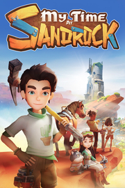

My Time at Sandrock
Detalles
|  | |
| Tiempo de juego | No Jugado |
| Última actividad | Nunca |
| Añadido | 11/6/2024 14:41:31 |
| Modificado | 11/8/2024 17:34:01 |
| Estado de finalización | No Jugado |
| Librería | Playnite |
| Fuente | 6TB STORE |
| Plataforma | PC (Windows) |
| Fecha de lanzamiento | 11/2/2023 |
| Puntuación de la Comunidad | 86 |
| Puntuación de la Crítica | 80 |
| Puntuación de usuario | |
| Género | Aventura Casual Indie Rol Simuladores |
| Desarrollador | Pathea Games |
| Editor | DMM Games Focus Entertainment Pathea Games PM Studios, Inc. |
| Característica | Cloud Saves Compat. Total Con Mando Cooperativo Cooperativo En Línea Logros De Multijugador Préstamo Familiar Un Jugador |
| Enlaces | Punto de encuentro Discusiones Guías Noticias Página de la tienda PCGamingWiki Logros |
| Tag | Acceso anticipado Aventura Caricaturescos Casuales Construcción Fabricación Indie Minería Multijugador Mundo abierto Personalización de personajes Posapocalípticos Protagonista femenina Rol Sandbox Simulación Simulador agrícola Simulador de citas Simulador de vida Un jugador |
Descripción

My Time at Sandrock-Viaja a la desértica comunidad de Sandrock y asume el papel de un Constructor principiante. Utiliza tu confiable juego de herramientas para recopilar recursos, construir maquinaria ¡y convertir tu ruinoso taller en una instalación de producción que marche sobre ruedas para salvar a la ciudad de las fauces de la ruina económica!
Después de aceptar una propuesta de trabajo para convertirte en el nuevo Constructor de Sandrock, llegarás a la salvaje y accidentada ciudad-estado, donde dependerá de ti y de tus confiables herramientas llevar a la comunidad a su antigua gloria. Reúne recursos para construir maquinaria, haz amistad con los lugareños y defiende a Sandrock de los monstruos… ¡Todo ello mientras salvas a la ciudad de la ruina económica!
Construye tu taller


¡Transforma un taller abandonado en una instalación de producción que marche sobre ruedas! Utiliza un intrincado grupo de maquinarias para procesar materiales y producir partes de enormes estructuras antes de ensamblarlas pieza a pieza para ayudar a que Sandrock florezca.
Crea cientos de artilugios únicos en la mesa de trabajo para decorar tu granja, da regalos a los habitantes de Sandrock o ayuda con las peticiones de la comunidad.

Explora los vastos desiertos que rodean a la ciudad-estado de Sandrock. Adéntrate en las ruinas para excavar en busca de reliquias del Viejo Mundo, encuentra nuestros materiales en lugares de difícil acceso o pasa el rato relajándote en Sandrock en compañía de tus vecinos.


Juega una elaborada historia, completa con cientos de misiones secundarias e interactuando con más de 30 personajes nuevos. Pasa el rato conociendo a los residentes de Sandrock, descubriendo sus historias y estableciendo conexiones significativas a lo largo de tu viaje.


Cambia rápidamente entre disparos en tercera persona y combate cuerpo a cuerpo durante batallas dinámicas. Utiliza nuevas armas y el nuevo sistema de combate de ruptura de defensa a tu ventaja, ¡o mejora tus estadísticas para tener una victoria aplastante!


Utiliza tu experiencia para subir el nivel de tu Constructor y desbloquear habilidades. Conviértete en un maestro artesano, especialízate en combate o céntrate en las interacciones sociales con habilidades que se adaptan a todos los estilos de juego.


- Utiliza las ganancias de tu taller para convertir el desierto en tierra cultivable;
- Cuida de tus cultivos para ganar dinero adicional o transfórmalos en deliciosos platillos;
- Asiste a festivales con los residentes de Sandrock;
- Descubre secretos… ¡y mucho más!

Tanto los Portianos como los nuevos Constructores que nunca han puesto un pie en Portia encontrarán un nuevo y divertido mundo con mucho por explorar a su propio ritmo, de la mano de PNJs con historias muy diversas que mejorarán la rejugabilidad. Si eres un Constructor experimentado te reencontrarás con todo lo que te atrapó de Mis días en Portia y más. Te sentirás como en casa con el encantador juego de rol de simulación de vida que es Mis Días en Sandrock.